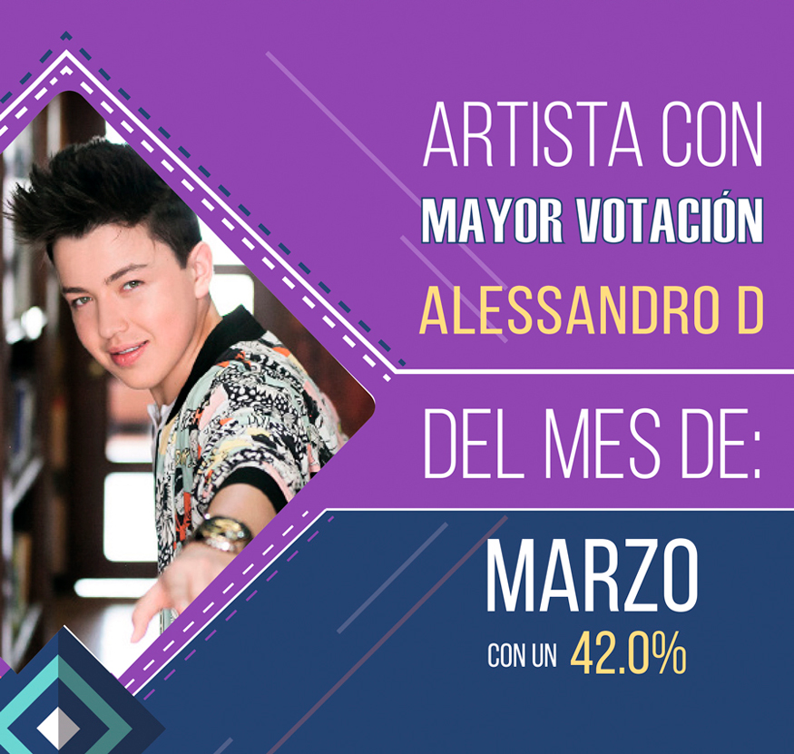
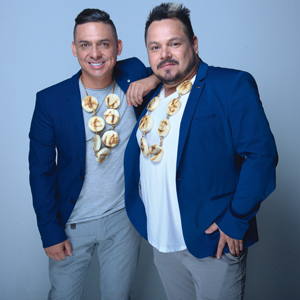
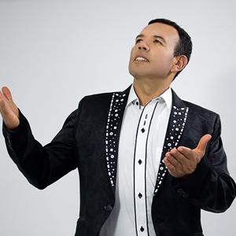

Directorio de Artistas

Alessandro D
{kind=link}
Alexander González
 |
Es uno de los artistas revelación de la música
popular en Colombia. A sus cortos 24 años,
tiene un ya sin número de canciones que le
cantan al amor y al despecho. El hijo de El
Charrito Negro, uno de los más grandes
exponentes de la música popular, presenta su
más reciente sencillo -Me sobrabas tú- y lo
pueden disfrutar en su canal de YouTube. |
Amanda Patricia
 |
La hermosa payanés promete llegar con su nuevo sencillo a todos los rincones de Colombia y ubicarse en los artistas más tops de la música Colombiana regional (popular). "Como me ves más buena", cuenta la historia de esas personas que sin motivo se alejan y terminan una relación, y con el tiempo, por motivos de la vida se vuelven a encontrar y ella “está más buena”, él quiere volver y que todo sea como antes”. |
Aragón
{kind=link}
Carlos Hernández
{kind=link}
Duvan Navarro
{kind=link}
Edwin Marín
{kind=link}
Natalia Latorre y El Chapo de Sinaloa
 |
La cantautora colombiana Natalia Latorre, fue
escogida por Ernesto Pérez, más conocido en
el medio musical como El Chapo de Sinaloa para grabar a dúo la canción de su autoría
-Más fuerte que el viento-. El video ofcial fue
lanzado el 02 de febrero del 2019. |
Equipaje 11
 |
¿Y qué pasó que ahora me llama? |
Eri Linares
{kind=link}
Fernando Gil
{kind=link}
Gio Betancur
{kind=link}
Iván Carvajal
{kind=link}
Jeison Pérez
{kind=link}
John Jairo Pérez
 |
John Jairo Perez rey de reyes de la trova, humorista y gran interprete de la música parrandera y la parodia. |
John Yara
{kind=link}
Juan Pablo Márquez
{kind=link}
Julian Daza
 |
Julian Daza un artista de raices antioqueñas que lucha por llevar sus sueños en la musica popular a Colombia y el mundo. |
Julián López
{kind=link}
Karina Shalá
{kind=link}
Los Cantores Koko y Koronel
|  | Con un recorrido importante como la
primera agrupación de parodia del país, los
Cantores Koko y Koronel llegan con una
interesante propuesta como lo es nuevo éxito
-Chicharrón-. |
{kind=link}
Los Ronisch de Colombia
{kind=link}
Luna Llena Salsa Band
{kind=link}
Olider Montana
 |
Olider Montana, artista de música popular,
nacido en San Luis Tolima, reconocido a nivel
nacional e internacional con sus éxitos -Caja de
madera-, -Pobre y sincero-, -Fue mi error- y -En ti me tatúe-, entre otros, ahora llega con su
nueva propuesta musical -Tres engaños-. |
Omar Geles
{kind=link}
Orlando López
{kind=link}
Orquesta Rumba Kids
{kind=link}
Sebastián Rosales
 |
El cantante, compositor y productor caleño, Sebastián Rosales, presenta su primer trabajo discográfco, -Película rara-. Sebastian, está dedicado a fusionar géneros y estilos musicales urbanos con arriesgada creatividad. Contacto: |
Triana
{kind=link}
El Yiyo Bohórquez
|  | Oriundo de Santa Sofía - Boyacá. Cantante,
compositor e intérprete del acordeón; desde
muy niño su inclinación por el vallenato ha
llegado a miles de seguidores con canciones
como -Entrégame tu amor- y -Qué le digo al
corazón-, ahora presenta su nuevo éxito -El
amor de mi vida-. Contacto: |
{kind=link}